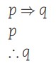
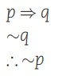
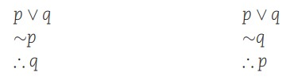
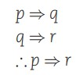

<!DOCTYPE html>
<html lang="en">
<head>
    <meta charset="UTF-8">
    <meta http-equiv="X-UA-Compatible" content="IE=edge">
    <meta name="viewport" content="width=device-width, initial-scale=1.0">
    <link rel="stylesheet" href="../css/bootstrap.min.css">
    <link rel="stylesheet" href="../css/estiloslogica.css">
    <title>Demostración por validez</title>
</head>
<body>
    <p class="top-space"></p>
    <br>
    <h1 id="titulo">Validez</h1>
    <nav class="navbar navbar-expand-lg navbar-dark fixed-top" id="navbar">
        <div class="container">
            <a href="../index.html"></a>
            <ul class="navbar-nav">
                <p id="p-nav">Ir a:</p>
                <li class="nav-item">
                    <a href="#destino1" class="nav-link"> Reglas de inferencia</a>
                </li>
            </ul>
        </div>
    </nav>

    <p class="top-space"></p>
    <section class="container">
        <div class="row">
          <div class="col">
            <div class="h-100 p-5 bg-light border rounded-5">
              <h1 class="display-5 fw-bold">Prueba formal</h1>
                <p class="fs-4">
                    Cuando el argumento tiene más de tres proposiciones simples diferentes no es fácil determinar la validez o 
                    invalidez de un argumento mediante tablas de verdad, pues resultaría bastante tedioso hacer dicha tabla de 
                    verdad, además de que se puede incurrir en errores involuntarios
                    <br>
                    <br>
                    Por ese motivo, el método más conveniente para obtener la validez de los argumentos es la prueba 
                    formal de validez, la cual utiliza reglas válidas, como las reglas de inferencia y las reglas de reemplazo o 
                    equivalencia.
                    <br>
                    Pero, antes de utilizar las reglas de inferencia y las reglas de reemplazo o equivalencia, primero es necesario conocer su definición y sus aspectos fundamentales.
                </p>
                <!--
                <center>
                    
                </center>
                -->
            </div> <!--END JUMBOTRON-->
          </div>
          <p id="destino1"></p>
          <br>
          <p class="top-space"></p>
          <h3 class="display-5" id="TC">Reglas de inferencia</h3>
          <p class="fs-4">
            Las reglas de inferencia son formas de argumentos cuya validez puede ser demostrada por tablas de verdad; 
            además, estas reglas permiten establecer conclusiones muy bien formadas y válidas a partir de otras premisas. En general son usadas para analizar los argumentos con muchas premisas o cuando se tienen cuatro o 
            más proposiciones simples.
            <ul class="fs-4">
                <li>
                    <b>Modus Ponens</b> 
                    Permite eliminar el antecedente siempre que la segunda premisa sea dicho antecedente
                    <br>
                    <center>
                        
                    </center>
                </li>
                <li>
                    <b>Modus Tollens</b> 
                    Permite eliminar el consecuente siempre y cuando esté negado en la segunda premisa, dando como 
                    consecuencia el antecedente negado.
                    <br>
                    <center>
                        
                    </center>
                </li>
                <li>
                    <b>Silogismo Disyuntivo</b> 
                    Permite eliminar una d elos disyunciones siempre que una de las dos esté negada en la segunda premisa
                    <br>
                    <center>
                        
                    </center>
                </li>
                <li>
                    <b>Silogismo hipotético</b>
                    Permite eliminar el consecuente de la primera premisa y el antecendente de la segunda permisa, siempre y cuando sean iguales
                    <br>
                    <center>
                        
                    </center>
                </li>
            </ul>
            </p>
        </div>
    </section>  

      <!--Botón para ir arriba-->
    <p class="top-space"></p>
    <p class="top-space"></p>
    <center>
        <p><a href="#top" id="arriba">Ir arriba</a></p>
        <br>
        <p><a href="SParcial.html" id="arriba">Regresar</a></p>
    </center>
    <!--Fin del botón de ir arriba-->   

    <!--El footer siempre deberá estar hasta abajo-->
    <!--Inicio del footer-->
    <p class="top-space"></p>
    <footer id="container-footer">
        <div class="container">
            <div class="row" id="row-footer">
                <center><h3 id="color-footer">Datos del grupo</h3></center>
                <div class="col-md-2">
                    <p id="text-p">Nombre: David Giovanni García Yoc </p>
                    <p id="text-p">Carnet: 5090-23-1554</p>
                    <p id="text-p">correo: dgarciay5@miumg.edu.gt</p>
                    <center></center>
                </div>
                <div class="col-md-2">
                    <p id="text-p">Nombre: Yordy Misael Carreto López </p>
                    <p id="text-p">Carnet: 5090-23-2903</p>
                    <p id="text-p">correo: ycarretol1@miumg.edu.gt</p>
                    <center></center>
                </div>
                <div class="col-md-2">
                    <p id="text-p">Nombre: Diego Andrés Ardón Morales </p>
                    <p id="text-p">Carnet: 5090-23-3728</p>
                    <p id="text-p">correo: dardonm@miumg.edu.gt</p>
                    <center></center>
                </div>
                <div class="col-md-2">
                    <p id="text-p">Nombre: Jeferson Alejandro Ailón Aguilar </p>
                    <p id="text-p">Carnet: 5090-23-1070</p>
                    <p id="text-p">correo: jailona2@miumg.edu.gt</p>
                    <center></center>
                </div>
                <div class="col-md-2">
                    <p id="text-p">Nombre: Dylan Efraín Reyes Barrera </p>
                    <p id="text-p">Carnet: 5090-23-1228</p>
                    <p id="text-p">correo: dreyesb7@miumg.edu.gt</p>
                    <center></center>
                </div>
            </div>
            <center>
                <br>
            <div class="col-md-3" >
                <a href="https://umg.edu.gt/?from=edurank.org" target="_blank"></a>
            </div>  
            </center>
        </div>
    </footer>

      <link rel="stylesheet" href="../js/bootstrap.bundle.min.js">
</body>
</html>